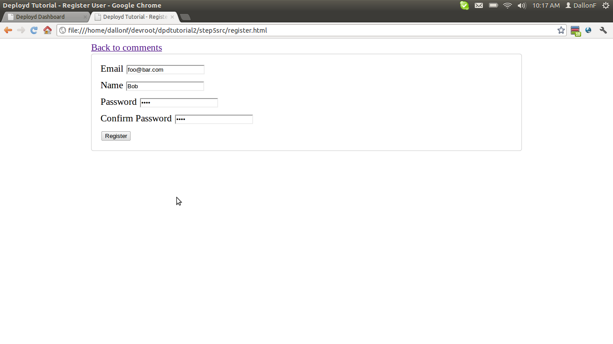
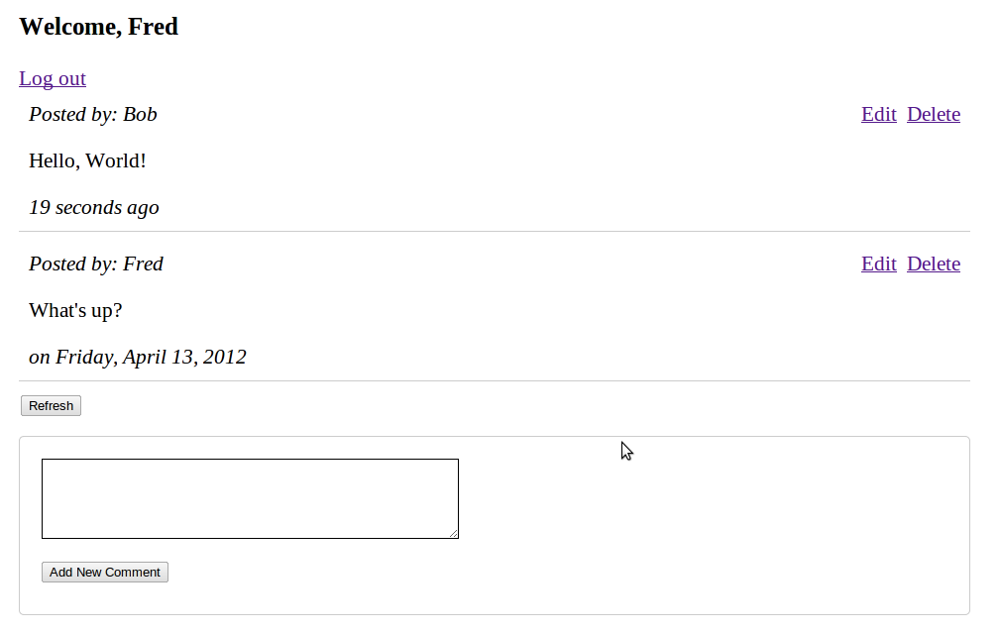

This app allows users to edit and delete comments, but there's no security - anybody can edit or delete anybody else's comment. Needless to say, this app could get chaotic very quickly. A user should have to sign up and login before posting anything, and they should only be able to edit and delete their own comments.
In the dashboard, create a new Users Collection; leave it at its default name of /users. Edit the collection and add a single string called name. Notice that the Users Collection comes with the email and password properties.
Add a call to cancel("Not yet supported") in the On PUT and On DELETE events.
The cancel() function causes a request to halt with a specified error message. This is useful for security. In this case, there is no UI to edit or delete users, so you don't want that to be available over the REST API.
On the front-end, you'll have to create a new page to allow users to register. Add register.html:
<!DOCTYPE html>
<html>
<head>
<title>Deployd Tutorial - Register User</title>
<link href="style.css" rel="stylesheet" type="text/css"/>
</head>
<body>
<div class="container">
<a href="index.html">Back to comments</a>
<form id="user-form">
<div class="form-element">
<label for="email">Email</label>
<input type="email" id="email" name="email"/>
</div>
<div class="form-element">
<label for="name">Name</label>
<input type="text" id="name" name="name"/>
</div>
<div class="form-element">
<label for="password">Password</label>
<input type="password" id="password" name="password"/>
</div>
<div class="form-element">
<label for="password-confirm">Confirm Password</label>
<input type="password" id="password-confirm" name="password-confirm"/>
</div>
<button type="submit">Register</button>
</form>
</div>
<script type="text/javascript" src="http://ajax.googleapis.com/ajax/libs/jquery/1.7.1/jquery.min.js"
></script>
<script type="text/javascript" src="utils.js"></script>
<script type="text/javascript" src="register.js"></script>
</body>
</html>
Also, take the url() and showError functions out of script.js and move them into a new file called utils.js so we can re-use them on both pages:
function url(path) {
return 'http://[MYAPP].deploydapp.com' + path;
}
function showError(xhr) {
alert(xhr.responseText);
}
Add a reference to utils.js on index.html, too:
<!-- ... -->
<script type="text/javascript" src="utils.js"></script>
<script type="text/javascript" src="script.js"></script>
<!-- ... -->
Finally, create register.js:
$(document).ready(function() {
$('#user-form').submit(function() {
var user = {
email: $('#email').val(),
name: $('#name').val(),
password: $('#password').val()
};
if ($('#password-confirm').val() !== user.password) {
alert("Passwords must match!");
return false;
}
$.ajax(url('/users'), {
type: "POST",
contentType: "application/json",
data: JSON.stringify(user),
success: function() {
alert("Thank you for signing up!");
location.href = "index.html";
},
error: showError
});
return false;
});
});
There's nothing new happening here - creating a user is exactly the same as creating a comment.

Add this markup above the comments div in index.html:
<!-- ... -->
<form id="login-form">
<input type="email" placeholder="Email" id="email" name="email" />
<input type="password" placeholder="********" id="password" name="password" />
<button type="submit">Login</button>
<a href="register.html">Sign up</a>
</form>
<div id="greeting">
<h3></h3>
<a href="#" id="logout-btn">Log out</a>
</div>
<!-- ... -->
Add the following to the top of $(document).ready in script.js:
var currentUser = null;
checkLogin();
Add the checkLogin() and showUser() functions:
function checkLogin() {
$.ajax(url('/users/me'), {
type: "GET",
success: function (result) {
if (result) {
showUser(result);
}
},
error: function() {
currentUser = null;
$('#login-form').show();
$('#greeting').hide();
}
});
}
function showUser(user) {
currentUser = user;
$('#login-form').hide();
$('#greeting').show().find('h3').text("Welcome, " + user.name);
}
This uses the special /users/me route, which returns the current user. To have a current user, though, you'll need to finish the login form:
$('#login-form').submit(function() {
var login = {
email: $('#email').val(),
password: $('#password').val()
};
$.ajax(url('/users/login'), {
type: "POST",
contentType: "application/json",
data: JSON.stringify(login),
success: function(result) {
showUser(result.user);
},
error: showError
});
return false;
});
This is a POST to /users/login with the properties email and password. This is an action route; instead of creating a user like a normal POST, it will authenticate a user and cause subsequent /users/me requests to return that user.
Finally, add a log out event handler that POSTs to users/logout:
$('#logout-btn').click(function() {
$.ajax(url('/users/logout'), {
type: "POST",
success: function() {
currentUser = null;
$('#login-form').show();
$('#greeting').hide();
},
error: showError
});
return false;
});
NOTE: If you are using Google Chrome to test your app, it will not store cookies when you open it from your computer (when the URL starts with "file://"). You could upload the files to Deployd and test the app online, or you can run Chrome with the command line option --enable-file-cookies.
Now that a user can register and log in, comments have to be secured so that only logged in users can post them. In the Deployd dashboard, go back to the /comments resource.
name will be an automatic property now, so make it Optional.
Add a new Optional string called creator.
At the top of your POST event, add the following:
if (me) {
this.creator = me._id;
this.name = me.name;
} else {
cancel("You must be logged in to post a comment");
}
me is a special object that represents the current user. If the current user is not logged in, me will be undefined.
Because name is now an automatic property, make it optional.
Wrap your PUT event in the following if statement:
if (me && me._id == this.creator) {
// ...
} else {
cancel("This is not your comment!");
}
In addition, take this opportunity to protect all the properties except comment in PUT:
protect('creator');
protect('name');
protect('timestamp');
protect('age');
Add a similar DELETE event:
if (!(me && me._id == this.creator)) {
cancel("This is not your comment!");
}
On the front-end, users shouldn't enter their names on comments anymore; it should be the name they entered while signing up. Remove the field from index.html:
<div class="form-element">
<label for="name">Name: </label>
<input type="text" id="name" name="name" />
</div>
And modify $('#comment-form').submit in script.js:
$('#comment-form').submit(function() {
var comment = $('#comment').val();
$.ajax(url('/comments'), {
type: 'POST',
contentType: 'application/json',
data: JSON.stringify({
comment: comment
}),
success: function(result) {
addComment(result);
$('#comment').val('');
},
error: showError
});
return false;
});

Congratulations, you've now built a working app with a Deployd backend! For more information, check out the Deployd documentation for a full reference of what you can do. Good luck!